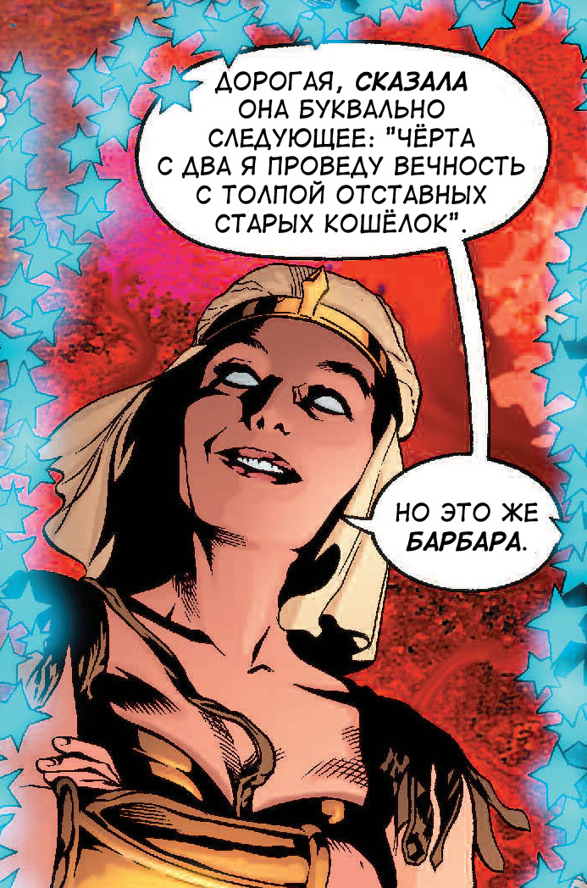
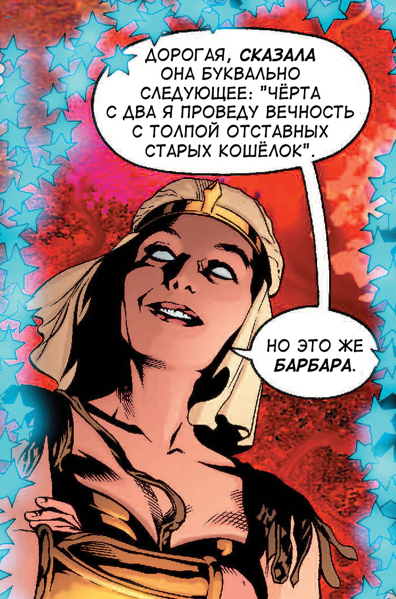

Прометея
Promethea by Alan Moore
Графический роман Алана Мура про Апокалипсис и силу воображения.
Перевод и вёрстка в Фотошопе с полной локализацией: проза, стихи, обложки, надписи, звуки.
32 выпуска в pdf или cbz.
Перевожу с английского истории в картинках — мистику и фантастику. Вычитываю, верстаю и оформляю сама.
Люблю, когда читатель забывает, что перед ним перевод. Очень люблю, когда этого сложно добиться.
Promethea by Alan Moore
Графический роман Алана Мура про Апокалипсис и силу воображения.
Перевод и вёрстка в Фотошопе с полной локализацией: проза, стихи, обложки, надписи, звуки.
32 выпуска в pdf или cbz.
 


17 776: What Football Will Look Like in the Future by John Bois
Мультимедийная повесть Джона Бойса про американский футбол и космические зонды.
Перевод, локализация картинок и видео, вёрстка в html.
25 глав онлайн.
Neurocomics by Timothy Leary
Про восьмиконтурную модель психики Тимоти Лири.
Перевод, вёрстка в Фотошопе.
rar 97 мб
The Psychonaut Field Manual by Nathan Smith (bluefluke)
Про медитацию, осознанные сны и всё такое.
Перевод, вёрстка и оформление в Фотошопе.
pdf 26 мб
cbz 85 мб
The Long Tomorrow by Mœbius
Комикс Мёбиуса, с которого начался киберпанк.
Перевод, вёрстка в Фотошопе.
pdf 10 мб
cbz 32 мб
Sympathy for the Devil: The True Story of the Process Church of the Final Judgment
Перевод субтитров к документальному фильму.
Paranormalizing the Popular through the Tibetan Tulpa: Or what the next Dalai Lama, the X Files and Affect Theory (might) have in common by Ben Joffe
Перевод cтатьи Бена Иоффе.